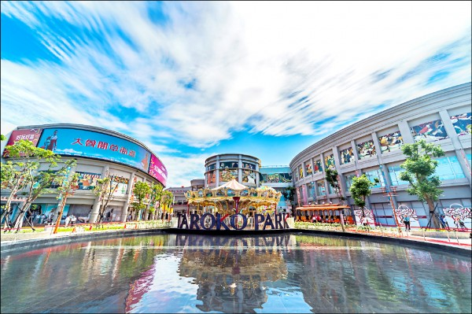
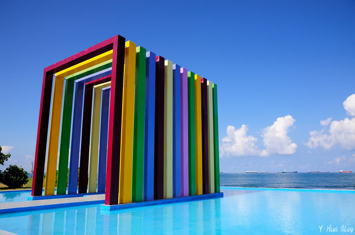
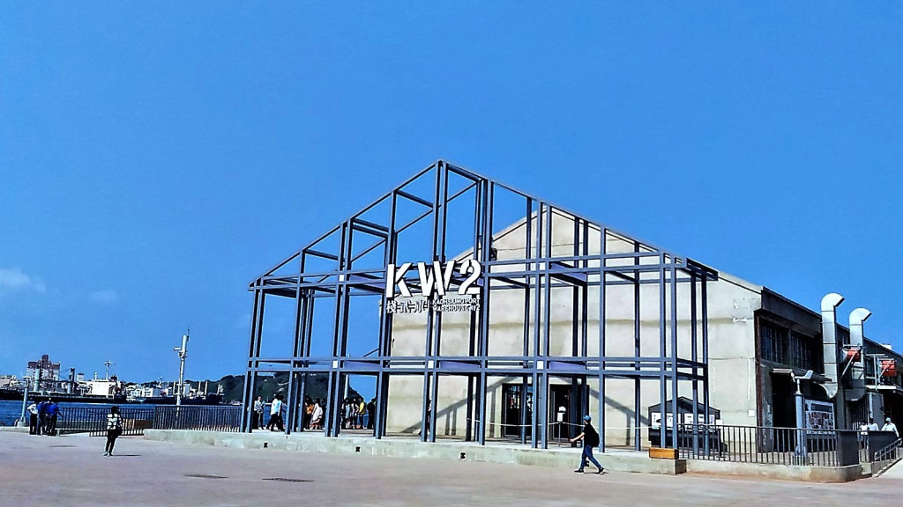
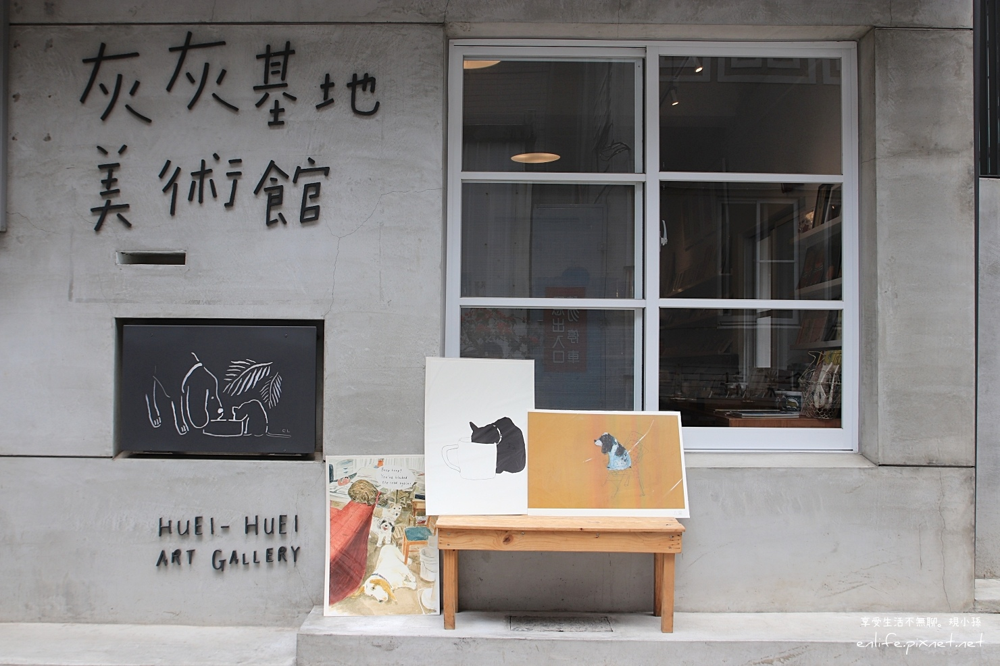
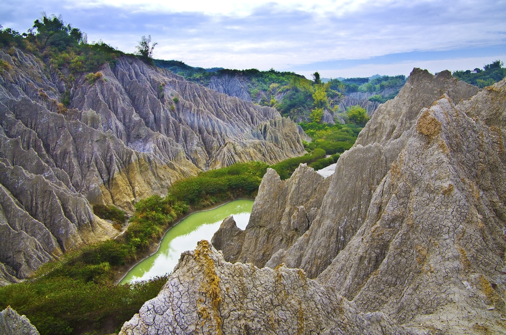
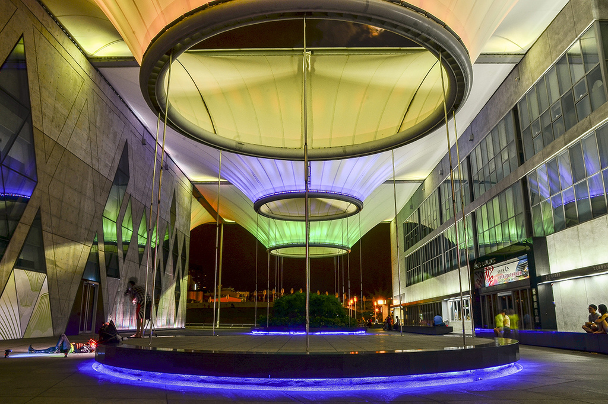
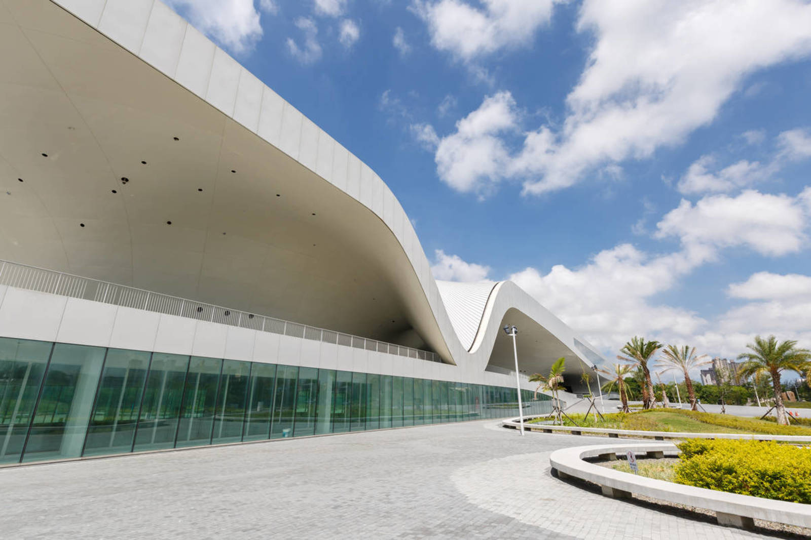
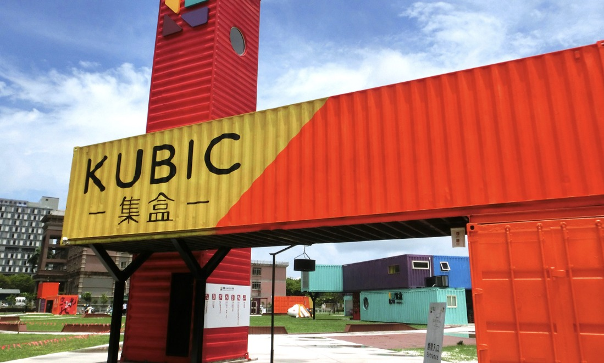
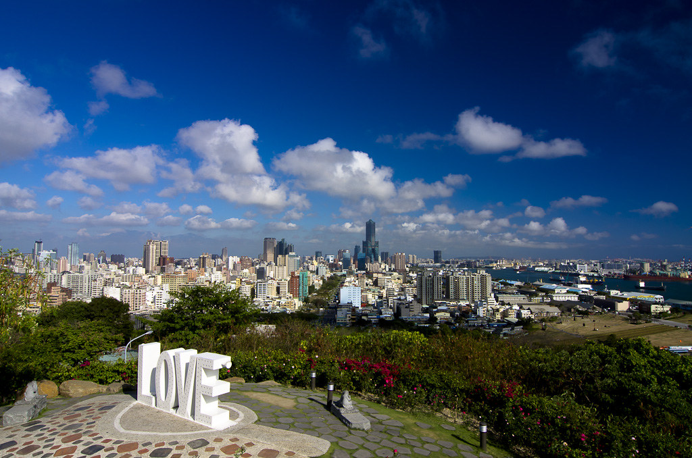

大魯閣草衙道

簡介
大魯閣草衙道坐落在高雄市前鎮區，於2016年5月9日開幕，
由大魯閣集團向高雄捷運南機場承租開發的大型購物中心，鄰近高雄捷運紅線草衙站，
占地2萬6千坪、建築面積約4萬2千坪， 園區內包含鈴鹿賽道樂園、賽車場、購物商場、
健身中心、飯店與國賓影城，是一座結合購物、運動、親子、餐飲、文創、
休閒與度假等豐富元素的複合式商場。
日本海外授權的鈴鹿賽道樂園
大魯閣草衙道最受矚目的重點：鈴木賽道樂園，是日本鈴鹿賽道目前唯一海外授權、
讓大小朋友體驗自行操控快感的駕駛主題樂園，引進多款娛樂遊樂設施，
將安全駕駛、交通教育與親子互動學習的觀念，透過遊戲互動一起學習成長，
更有10:1等比例縮小的專業賽道，多種不同路線設計，體驗卡丁車駕駛操控的競速快感。
鈴鹿賽道樂園是不需要入場券的主題遊樂園，可自行選擇不同遊樂設施付費使用，
內分為五大主題：迷你鈴鹿賽道、小小城市、技能培訓村、草衙道電車、旋轉木馬。
迷你鈴鹿賽道是依日本鈴鹿賽車場以10:1等比例縮小呈現，全長600公尺，
配置有8字型立體交叉隧道、連續S彎、德古納彎道、髮夾彎、湯匙彎、130R等經典路線重現，
搭配F1賽車同級的TECPRO護欄，體驗全台唯一專業賽道駕駛極速快感的同時，也有專案安全的保護。
採用經典歐風的草衙道電車，以典雅造型來回於園區入口至樂園，帶您瀏覽園區美景；
跨世代共同回憶的旋轉木馬，讓大小朋友一同回到甜蜜美好的歡樂時光；
小小城市內有小小騎士、甩尾小車手、庫奇拉駕駛學校、摩天輪等區，讓小朋友透過實地騎乘操作，
透過遊戲認識交通規則、駕駛操作樂趣；技能培訓村提供多項娛樂設施，包含天空飛行家、飄移高手、
自由搖滾、越野大冒險、自由落體，將刺激快感延伸至空中。
旗津彩虹教堂

基本介紹
彩虹教堂（Rainbow Arch）以幾何的建築形態為主要設計元素，
搭配不同時間光影變化產生立體的空間感，彩虹色系則代表幸福意涵，
為新人帶來好運祝福；另外彩虹教堂特別選在旗津沙灘場域，配合真實的海景，
形成天然地景為概念，一旁的水池透過拍攝角度呈現無邊境視覺效果，讓建築體像是飄浮在海中央，
塑造還天一色的婚紗美境，讓旗津遊客不必遠渡重洋也能拍出浪漫的異國風情！
不只成為高雄旗津熱門及打卡亮點，更榮獲2015雅虎10全台大爆紅景點第二名。
日本海外授權的鈴鹿賽道樂園
大魯閣草衙道最受矚目的重點：鈴木賽道樂園，是日本鈴鹿賽道目前唯一海外授權、
讓大小朋友體驗自行操控快感的駕駛主題樂園，引進多款娛樂遊樂設施，
將安全駕駛、交通教育與親子互動學習的觀念，透過遊戲互動一起學習成長，
更有10:1等比例縮小的專業賽道，多種不同路線設計，體驗卡丁車駕駛操控的競速快感。
鈴鹿賽道樂園是不需要入場券的主題遊樂園，可自行選擇不同遊樂設施付費使用，
內分為五大主題：迷你鈴鹿賽道、小小城市、技能培訓村、草衙道電車、旋轉木馬。
迷你鈴鹿賽道是依日本鈴鹿賽車場以10:1等比例縮小呈現，全長600公尺，
配置有8字型立體交叉隧道、連續S彎、德古納彎道、髮夾彎、湯匙彎、130R等經典路線重現，
搭配F1賽車同級的TECPRO護欄，體驗全台唯一專業賽道駕駛極速快感的同時，也有專案安全的保護。
採用經典歐風的草衙道電車，以典雅造型來回於園區入口至樂園，帶您瀏覽園區美景；
跨世代共同回憶的旋轉木馬，讓大小朋友一同回到甜蜜美好的歡樂時光；
小小城市內有小小騎士、甩尾小車手、庫奇拉駕駛學校、摩天輪等區，讓小朋友透過實地騎乘操作，
透過遊戲認識交通規則、駕駛操作樂趣；技能培訓村提供多項娛樂設施，包含天空飛行家、飄移高手、
自由搖滾、越野大冒險、自由落體，將刺激快感延伸至空中。
棧貳庫

景觀特色
棧貳庫KW2前身為日人建造的小型倉庫，後將1700 坪的室內空間設計修復後，
堪稱全國最大單一倉庫改造活化案例。館內進駐品牌以「職人・台灣」為主軸，
引入文創設計、餐飲美食等商家。
園區介紹
棧貳庫位於鼓山區七賢路底、高雄港 2 號碼頭，
前身為日人於大正 3 年(1914)在新濱町岸壁興建之磚牆瓦頂單層小型倉庫，
用以儲存、輸運砂糖為主，迄今已有 104 年歷史。二次世界大戰期間遭受美軍轟炸，
1962 年國民政府以鋼筋混凝土柱結合力霸鋼筋重建完工，做為蔗糖與香蕉出口專用倉庫，
見證台灣經濟蓬勃起飛的榮景，2003 年經高雄市府公告為歷史建築。
由於區位條件優異且富有歷史文化意涵，高雄港區土地開發公司去年成立後提議應予以修復再利用，
獲得臺灣港務公司和高雄市政府一致支持，歷經一年的計畫審查、設計施工與招商進駐，
如今透過文創、展覽、餐飲等複合經營型態重現港濱歷史場域，
1,700 坪的室內空間堪稱全國最大單一倉庫改造活化案例，
期盼藉以擴大周邊駁二藝術特區與哈瑪星鐵道文化園區能量，再創新一波港區遊憩觀光人潮。
灰灰基地美術館

基本介紹
由中央公園站漫步10多分鐘，就能抵達坐落在新興區民有街的『灰灰基地美術館』，
這裡是一個小巧可愛、以繪本與書籍插畫為主題的城市展覽空間，同樣由本東倉庫創辦人－繪本作家李瑾倫，
與熱愛動物的一群夥伴共同籌畫設立，與一般美術館不同，灰灰基地歡迎參觀者帶著毛小孩前來看展，
讓人與動物和人與創作之間的距離更親近。美術館的名字其實有個有趣的小故事，
這裡有隻名叫「灰灰」的流浪貓，幾乎每天會造訪美術館，直到隔天早上再出門玩耍，宛如是牠的基地般，
因此設立時也就順理成章取名為灰灰基地。美術館希望藉由展覽，改善一般人對流浪貓、狗的刻板印象，
館方也透過實際行動，將部分營收也用於友善動物照顧、關懷事務。
田寮月世界

形成原因
月世界這種奇特的景觀在地理學上稱為『惡地』，係雨水與河水在質地軟弱、色呈青灰且略含鹽質的泥岩區，
經年累月，強烈侵蝕而成的荒涼崎嶇之地形，泥岩本身顆粒細小，且膠結性十分疏鬆，
透水性又低，因此遇雨水就變得十分軟滑，順坡向下流動，植物生長相當困難，所以到處童山濯濯，
生成泥岩裸露，稜脊和溝谷密佈是泥岩惡地形的一種特有景觀；台灣屬於地殼不穩的造山運動帶，
又是個島弧地形、造山運動強烈、隆升速率很快，因此惡地就容易產生。月世界原始風貌保留完整，
放眼望去，只見一片黃土色、光禿禿的山脊，幾叢翠竹點綴於其間，稍為青灰色的山坡添上一點綠意。
簡介
田寮月世界位在高雄市北邊田寮區的崇德村、古亭村及內門鄉的瑞山村一帶，
以二仁溪為邊界與台南縣為鄰；田寮月世界內築一座攔沙土壩，蓄積雨季之水，名為『月景農塘』，
昔日每屆雨季，即集水成湖；然而由於人工蓄水庫四周盡屬質地軟弱的泥岩山丘，在雨水強烈的沖刷下，
不過短十多年，月景農塘已告淤滿，只剩一片滿目蒼涼的惡地景觀。
成立「月世界地景公園」原因
在田寮月世界附近也可觀察泥火山地形，主要分佈在田寮區崇德村的小滾水和古亭村的大滾水、應菜龍泥火山區；
泥火山是噴出泥漿的小型火山地形，泥火山的形成有幾個要件，包括泥漿來源的泥岩層分佈、天然氣的湧出，
有斷層一類的通道噴出泥漿與天然氣；泥火山常呈現間歇性的噴發現象，
噴發的規模則視地底天然氣與泥漿的累積壓力而定；泥火山和月世界青灰岩地形有類似惡地現象，
在噴發之後的泥流堆積地區，經降雨沖蝕，產生一些特殊的小地形，有淺溝、Ｖ形谷、泥岩、噴泥口等。
2010年時，高雄縣市合併後逐年在此地增建設施，並規劃為「月世界地景公園」。
除了增設觀景台、天梯木棧道、生態湖涼亭及停車場之外，在樹林間也成立了地質生態的解說中心，
提供民眾對泥岩地質生態有更進一步的認識。
2014年6月增設弄月步道於同期改名為五里坑溝，入口就在後山老井附近。
大東藝術文化中心

簡介
獨樹一格的大東文化藝術中心座落於高雄鳳山區，為一處多功能文化園區。
外型設計意象以自然元素為主軸，加入風的流動、光影及雨水等意象，營造出東方禪學之美。
內部設施多元，包括多功能演藝廳、視覺展覽館等，更具備全台首座的藝術圖書館。
內部設施與園區介紹
由於鳳山地區原有的國父紀念館設備老舊，為了讓鳳山得以持續推動文化產業，前高雄縣政府經過多方評估後，
將緊鄰鳳山溪、百榕園、捷運站的大東國小，規劃為「大東文化藝術中心」，並於2008年12月5日動土，
直至2012年3月啟用。整體設計強調自然元素，以半戶外建築空間結合週遭生態，打造東方禪學之美。
建築外觀的特殊造型搭配夜間的光影變化，讓人讚嘆不已。
大東藝術中心被定位為多功能文化園區，包括複合機能的多功能演藝廳、文化創意空間的視覺展覽館，
以及全台首座的藝術圖書館。其中演藝廳可容納880席觀眾，兼具戲劇、會議及音樂等多元使用。
另有舞蹈排練室、鳳山歷史教室等，設施相當完備。
衛武營國家藝術文化中心

介紹
位於臺灣高雄市鳳山區，是全球最大單一屋頂綜合劇院，擁有亞洲最大管風琴，是臺灣規模最大的文化硬體建設，
也是南臺灣一座國家級表演藝術場館，由文化部衛武營藝術文化中心籌備處負責籌備規劃興建，
完工後納入國家表演藝術中心，由衛武營國家藝術文化中心負責營運。
主體建築由荷蘭建築師法蘭馨·侯班設計[，包含四個室內表演廳院，
分別為2236席座位的歌劇院、1981席座位的音樂廳、1210席座位的戲劇院與434席座位的表演廳，
南側設有戶外劇場與都會公園中央草坪連結，可容納3萬人欣賞戶外演出活動。
音樂廳設置擁有9085支發音管的管風琴，是亞洲規模最大的管風琴，由德國克萊斯公司打造。
衛武營國家藝文中心被英國衛報讚譽為「有著史詩般場景的地表最強藝文中心」。
空間與設備
1.歌劇院
2.音樂廳
3.戲劇院
4.表演廳
5.榕樹廣場
6.商業空間
KUBIC集盒

介紹
位於亞洲新灣區的「集盒‧KUBIC」，以新創產業及都市再生作為策畫主軸。
KUBIC源自於立方體(cubic)，融合了高雄（Kaohsiung）、城市（Urban）、盒箱（Boxes）、創新（Innovation）、創意（Creative）等理念。
如七彩寶石般的繽紛貨櫃聚落，藍綠色象徵海洋、橘紅色代表高雄人的熱情、黃色是終年燦爛陽光、紫色則是源源不絕的創新創意，
搭配「說一個亞灣故事」主題城市展覽，打造一座色彩鮮豔、造型奇趣的貨櫃聚落，象徵亞洲新灣區匯聚的多元創新。
貨櫃承載著高雄人的生活與記憶，過去高雄曾引領全台改造貨櫃的風潮，今日「集盒‧KUBIC」則以展新的貨櫃聚落型式，
成為連結市民集體記憶與城市創新實踐行動的跨界平台。高雄開放包容、豪邁熱情的城市形象，
亦將透過「集盒‧KUBIC」轉化為本市競逐魅力城市的品牌象徵。
高雄忠烈祠

歷史沿革
高雄市忠烈祠座落壽山南麓，原址是日治時期的高雄神社。
高雄神社源起明治43年(1910)設於壽山下的打狗金刀比羅神社，主祀大物主命與崇德天皇，
大正9年(1920)高雄州政府向臺灣總督府申請增祀北白川宮能久親王，並於同年12月更名為高雄神社。
大正15年(1926)高雄神社取得壽山山腰七千餘坪官有土地，展開募款遷建工程，昭和3年(1928)4月開工，
隔年(1929)落成，昭和7年(1932)列格為縣社，正式列入日本國家神道系統。
二次世界大戰後，臺灣各地依據國民政府行政院訓令籌設忠烈祠，高雄市也在民國35年(1946)秋，
將日治時期高雄神社稍事修葺，改祀民國烈士，便以之代行忠烈祠之功能。民國61年(1972)台日斷交，引發拆除神社建築風潮。
民國62年(1973)高雄市長王玉雲發起重建忠烈祠的計劃，後歷經六年三期工程，
全部於民國67年(1978)1月15日完工。新建高雄忠烈祠主建築幾乎模仿臺北大直忠烈祠之中國古典式樣，
奉祀內容則主要參照桃園忠烈祠，並新建革命先烈史蹟資料館、貴賓室和辦公室等，構成今日高雄忠烈祠的整體樣貌。
至此，日治時期高雄神社既有建築幾乎被改建，僅殘存遺址如石燈籠等，部分獲得保留。
民國93年(2004)獲文建會「地方文化館計畫」補助，將革命先烈史蹟資料館活化為「戰爭與和平紀念館」。
忠烈祠座落於壽山南麓，可鳥瞰高雄港，遠眺高雄市區，氣勢雄偉，四周風景秀麗，由壽山腳下蜿蜒而上，
花木扶疏，蒼翠鬱茂，壽山景色畫入眼底，係深受高雄市民所喜愛之休憩場所，為高雄巿山川勝景之一。
建築風格
正殿建築採重簷宮殿式結構，屋頂金黃琉璃瓦，屋脊配仙人走獸，曲昂斗拱、棟梁鑿井均為宋式彩繪，
朱門銅造門乳和獸頭扣環，四周為水泥白假石廊，環以雕花雲頭勾欄，前臨十五級安山石階，倍顯古色古香。